감정평가사-1차-1교시 (2020-06-13 기출문제)
1과목: 민법(총칙,물권)
1. 법원(法源)에 관한 설명으로 옳지 않은 것은? (다툼이 있으면 판례에 따름)
- 사회구성원이 관습법으로 승인된 관행의 법적 구속력을 확신하지 않게 된 때에는 그 관습법은 효력을 잃는다.
- 헌법의 기본권은 특별한 사정이 없으면 사법관계에 직접 적용된다.
- 법원은 당사자의 주장ㆍ증명을 기다림이 없이 관습법을 직권으로 조사ㆍ확정하여야 한다.
- 우리나라가 가입한 국제조약은 일반적으로 민법이나 상법 또는 국제사법보다 우선적으로 적용된다.
- 관습법은 법령에 저촉되지 아니하는 한 법칙으로서의 효력이 있다.
(정답률: 알수없음)

2. 권리주체에 관한 설명으로 옳지 않은 것은? (다툼이 있으면 판례에 따름)
- 의사능력은 자신의 행위의 의미와 결과를 합리적으로 판단할 수 있는 정신적 능력으로 구체적인 법률행위와 관련하여 개별적으로 판단되어야 한다.
- 어떤 법률행위가 일상적인 의미만으로 알기 어려운 특별한 법률적 의미나 효과를 가진 경우, 이를 이해할 수 있을 때 의사능력이 인정된다.
- 현행 민법은 태아의 권리능력에 관하여 일반적 보호주의를 취한다.
- 태아의 상태에서는 법정대리인이 있을 수 없고, 법정대리인에 의한 수증행위도 할 수 없다.
- 피상속인과 그의 직계비속 또는 형제자매가 동시에 사망한 것으로 추정되는 경우에도 대습상속이 인정된다.
(정답률: 알수없음)
3. 미성년자의 행위능력에 관한 설명으로 옳은 것은? (다툼이 있으면 판례에 따름)
- 행위능력제도는 자기책임의 원칙을 구현하여 거래의 안전을 도모하기 위한 것이다.
- 미성년자가 그 소유의 부동산을 그의 친권자에게 증여하고 소유권이전등기를 마친 경우, 다른 사정이 없으면 적법한 절차를 거친 등기로 추정된다.
- 친권자는 그의 미성년 자(子)의 이름으로 체결한 계약을 자(子)가 미성년임을 이유로 취소할 수 있다.
- 친권자가 그의 친구의 제3자에 대한 채무를 담보하기 위하여 미성년 자(子) 소유의 부동산에 담보를 설정하는 행위는 이해상반행위이다.
- 미성년자가 타인을 대리할 때에는 법정대리인의 동의를 얻어야 한다.
(정답률: 알수없음)
4. 부재자의 재산관리에 관한 설명으로 옳지 않은 것은? (다툼이 있으면 판례에 따름)
- 부재자가 스스로 위임한 재산관리인에게 재산처분권까지 준 경우에도 그 재산관리인은 재산처분에 법원의 허가를 얻어야 한다.
- 재산관리인의 권한초과행위에 대한 법원의 허가결정은 기왕의 처분행위를 추인하는 방법으로도 할 수 있다.
- 재산관리인이 소송절차를 진행하던 중 부재자에 대한 실종선고가 확정되면 그 재산관리인의 지위도 종료한다.
- 생사불명의 부재자를 위하여 법원이 선임한 재산관리인은 그가 부재자의 사망을 확인한 때에도 선임결정이 취소되지 않으면 계속 권한을 행사할 수 있다.
- 생사불명의 부재자에 대하여 실종이 선고되더라도 법원이 선임한 재산관리인의 처분행위에 근거한 등기는 그 선임결정이 취소되지 않으면 적법하게 마친 것으로 추정된다.
(정답률: 알수없음)
5. 법인에 관한 설명으로 옳지 않은 것은? (다툼이 있으면 판례에 따름)
- 법인의 대표기관이 법인을 위하여 계약을 체결한 경우, 다른 사정이 없으면 그 성립의 효과는 직접 법인에 미치고 계약을 위반한 때에는 법인이 손해를 배상할 책임이 있다.
- 단체의 실체를 갖추어 법인 아닌 사단으로 성립하기 전에 설립주체인 개인이 취득한 권리ㆍ의무는 바로 법인 아닌 사단에 귀속된다.
- 법인 아닌 사단은 대표권제한을 등기할 수 없으므로 거래상대방이 사원총회가 대표권 제한을 결의한 사실을 몰랐고 모른데 잘못이 없으면, 제한을 넘는 이사의 거래행위는 유효하다.
- 민법에서 법인과 그 기관인 이사의 관계는 위임인과 수임인의 법률관계와 같다.
- 사단법인의 하부조직 중 하나라 하더라도 스스로 단체의 실체를 갖추고 독자활동을 한다면 독립된 법인 아닌 사단으로 볼 수 있다.
(정답률: 알수없음)
6. 법인에 관한 설명으로 옳지 않은 것은? (다툼이 있으면 판례에 따름)
- 법인은 설립등기를 함으로써 성립한다.
- 어느 사단법인과 다른 사단법인의 동일 여부는, 다른 사정이 없으면 사원의 동일 여부를 기준으로 결정된다.
- 법인의 대표자는 그 명칭이나 직위 여하가 아니라 법인등기를 기준으로 엄격하게 확정하여야 한다.
- 행위의 외형상 직무행위로 인정할 수 있으면, 대표자 개인의 이익을 위한 것이거나 법령에 위반한 것이라도 직무에 관한 행위이다.
- 대표자의 행위가 직무에 관한 것이 아님을 알았거나 중대한 과실로 모른 피해자는 법인에 손해배상책임을 물을 수 없다.
(정답률: 알수없음)
7. 물건에 관한 설명으로 옳지 않은 것은? (다툼이 있으면 판례에 따름)
- 종물은 주물소유자의 상용에 공여된 물건을 말한다.
- 주물과 다른 사람의 소유에 속하는 물건은 종물이 될 수 없다.
- 주물과 종물의 관계에 관한 법리는 권리 상호간에도 적용된다.
- 저당권의 효력이 종물에 미친다는 규정은 종물은 주물의 처분에 따른다는 것과 이론적 기초를 같이 한다.
- 토지의 개수는 지적공부의 등록단위가 되는 필(筆)을 표준으로 한다.
(정답률: 알수없음)
8. 강행규정에 위반되어 그 효력이 인정되지 않는 것을 모두 고른 것은? (다툼이 있으면 판례에 따름)
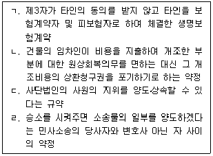
- ㄱ, ㄴ
- ㄱ, ㄷ
- ㄱ, ㄹ
- ㄴ, ㄷ
- ㄷ, ㄹ
(정답률: 알수없음)
9. 불공정한 법률행위에 관한 설명으로 옳은 것은? (다툼이 있으면 판례에 따름)
- 불공정한 법률행위로 무효가 된 행위의 전환은 인정되지 않는다.
- 불공정한 법률행위라도 당사자가 무효임을 알고 추인한 경우 유효로 될 수 있다.
- 불공정한 법률행위에 해당하는지 여부는 그 행위를 한 때를 기준으로 판단한다.
- 불공정한 법률행위의 요건을 갖추지 못한 법률행위는 반사회질서행위가 될 수 없다.
- 증여와 같이 아무런 대가관계 없이 당사자 일방이 상대방에게 일방적인 급부를 하는 행위도 불공정한 법률행위가 될 수 있다.
(정답률: 알수없음)
10. 대리에 관한 설명으로 옳지 않은 것은? (다툼이 있으면 판례에 따름)
- 계약체결의 권한을 수여받은 대리인은 체결한 계약을 처분할 권한이 있다.
- 본인이 이의제기 없이 무권대리행위를 장시간 방치한 것을 추인으로 볼 수는 없다.
- 매매계약의 체결과 이행에 관한 대리권을 가진 대리인은, 특별한 사정이 없으면 매수인의 대금지급기일을 연기할 수 있는 권한을 가진다.
- 본인이 사회통념상 대리권을 추단할 수 있는 직함이나 명칭 등의 사용을 승낙한 경우, 수권행위가 있는 것으로 볼 수 있다.
- 무권대리행위가 제3자의 위법행위로 야기된 경우에도, 본인이 추인하지 않으면 무권대리인은 계약을 이행하거나 손해를 배상하여야 한다.
(정답률: 알수없음)
11. 18세의 甲은 乙의 대리인을 사칭하여 그가 보관하던 乙의 노트북을 그 사정을 모르는 丙에게 팔았다. 이에 관한 설명으로 옳지 않은 것은? (다툼이 있으면 판례에 따름)
- 乙이 丙에게 매매계약을 추인한 때에는 매매계약은 확정적으로 효력이 생긴다.
- 乙이 甲에게 추인한 때에도 그 사실을 모르는 丙은 매매계약을 철회할 수 있다.
- 乙이 추인하지 않으면, 甲은 자신의 선택으로 丙에게 매매계약을 이행하거나 손해를 배상하여야 한다.
- 丙이 甲에게 대리권이 없음을 알았더라도 丙은 乙에게 추인 여부의 확답을 최고할 수있다.
- 乙이 추인한 때에는 甲은 자신이 미성년자임을 이유로 매매계약을 취소하지 못한다.
(정답률: 알수없음)
12. 착오에 관한 설명으로 옳지 않은 것은? (다툼이 있으면 판례에 따름)
- 매도인이 매매대금 미지급을 이유로 매매계약을 해제한 후에도 매수인은 착오를 이유로 이를 취소할 수 있다.
- 보험회사의 설명의무 위반으로 보험계약의 중요사항을 제대로 이해하지 못하고 착오에 빠져 계약을 체결한 고객은 그 계약을 취소할 수 있다.
- 계약서에 X토지를 목적물로 기재한 때에도 Y토지에 대하여 의사의 합치가 있었다면 Y토지를 목적으로 하는 계약이 성립한다.
- 착오에 관한 민법규정은 법률의 착오에 적용되지 않는다.
- 취소의 의사표시는 취소자가 그 착오를 이유로 자신의 법률행위의 효력을 처음부터 없애려는 의사가 드러나면 충분하다.
(정답률: 알수없음)
13. 甲은 乙의 기망으로 그 소유의 X토지를 丙에게 팔았고, 丙은 그의 채권자 丁에게 X토지에 근저당권을 설정하였다. 甲은 기망행위를 이유로 매매계약을 취소하려고 한다. 이에 관한 설명으로 옳지 않은 것은? (다툼이 있으면 판례에 따름)(문제 오류로 가답안 발표시 5번으로 발표되었지만 확정답안 발표시 1, 5번이 정답처리 되었습니다. 여기서는 가답안인 5번을 누르시면 정답 처리 됩니다.)
- 甲은 丙이 그의 잘못없이 기망사실을 몰랐을 때에만 매매계약을 취소할 수 있다.
- 丙의 악의 또는 과실은 甲이 증명하여야 한다.
- 甲은 매매계약을 취소하지 않고 乙에게 불법행위책임을 물을 수 있다.
- 丁의 선의는 추정된다.
- 매매계약을 취소한 甲은, 丁이 선의이지만 과실이 있으면 근저당권설정등기의 말소를 청구할 수 있다.
(정답률: 알수없음)
14. 의사표시의 효력발생시기에 관한 설명으로 옳지 않은 것은? (다툼이 있으면 판례에 따름)
- 상대방 있는 의사표시는 상대방에게 도달한 때에 그 효력이 생긴다.
- 표의자가 의사표시의 통지를 발송한 후 제한능력자가 되어도 그 의사표시의 효력은 영향을 받지 아니한다.
- 상대방이 현실적으로 통지를 수령하거나 그 내용을 안 때에 도달한 것으로 본다.
- 상대방이 정당한 사유 없이 통지의 수령을 거절한 경우, 상대방이 그 통지의 내용을 알 수 있는 객관적 상태에 놓여 있는 때에 의사표시의 효력이 생긴다.
- 등기우편으로 발송된 경우, 상당한 기간 내에 도달하였다고 추정된다.
(정답률: 알수없음)
15. 법률행위의 효력에 관한 설명으로 옳은 것을 모두 고른 것은? (다툼이 있으면 판례에 따름)
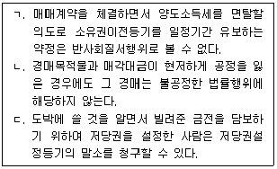
- ㄱ
- ㄴ
- ㄱ, ㄷ
- ㄴ, ㄷ
- ㄱ, ㄴ, ㄷ
(정답률: 알수없음)
16. 형성권에 관한 설명으로 옳은 것을 모두 고른 것은? (다툼이 있으면 판례에 따름)
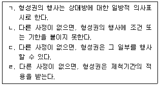
- ㄱ, ㄴ, ㄷ
- ㄱ, ㄴ, ㄹ
- ㄱ, ㄷ, ㄹ
- ㄴ, ㄷ, ㄹ
- ㄱ, ㄴ, ㄷ, ㄹ
(정답률: 알수없음)
17. 조건과 기한에 관한 설명으로 옳지 않은 것은? (다툼이 있으면 판례에 따름)
- 법률행위의 조건은 그 조건의 존재를 주장하는 사람이 증명하여야 한다.
- 정지조건부 법률행위에서 조건이 성취된 사실은 조건의 성취로 권리를 취득하는 사람이 증명하여야 한다.
- 불능조건이 정지조건인 경우 그 법률행위는 무효이다.
- 조건의 성취로 불이익을 받을 당사자가 신의성실에 반하여 조건의 성취를 방해한 경우, 처음부터 조건없는 법률행위로 본다.
- 기한이익 상실의 약정은 특별한 사정이 없으면 형성권적 기한이익 상실의 약정으로 추정한다.
(정답률: 알수없음)
18. 소멸시효에 관한 설명으로 옳지 않은 것은? (다툼이 있으면 판례에 따름)
- 인도받은 부동산을 소유권이전등기를 하지 않고 제3자에게 처분ㆍ인도한 매수인의 등기청구권은 소멸시효에 걸리지 않는다.
- 채무불이행으로 인한 손해배상청구권의 소멸시효는 손해배상을 청구한 때부터 진행한다.
- 채권자가 보증인을 상대로 이행을 청구하는 소를 제기한 때에도 주채무의 소멸시효가 완성하면 보증인은 주채무가 시효로 소멸되었음을 주장할 수 있다.
- 재산권이전청구권과 동시이행관계에 있는 매매대금채권의 소멸시효는 지급기일부터 진행한다.
- 등기 없는 점유취득시효가 완성하였으나 등기하지 않은 토지점유자가 토지의 점유를 잃은 경우, 그로부터 10년이 지나면 등기청구권은 소멸한다.
(정답률: 알수없음)
19. 소멸시효와 등기 없는 취득시효에 관한 설명으로 옳은 것은? (다툼이 있으면 판례에 따름)
- 취득시효기간 동안 계속하여 등기명의인이 동일한 때에도 반드시 점유를 개시한 때를 기산점으로 하여야 한다.
- 점유자가 전(前)점유자의 점유를 아울러 주장할 때에는 그 점유의 개시시기를 어느 점유자의 점유기간 중 임의의 시점으로 선택할 수 있다.
- 채권의 소멸시효가 완성하면 그 채무자의 다른 채권자는 직접 그 완성을 원용할 수있다.
- 압류 또는 가압류는 소멸시효와 취득시효의 중단사유이다.
- 취득시효의 중단사유는 종래의 점유상태의 계속을 파괴하는 것으로 인정될 수 있는 것이어야 한다.
(정답률: 알수없음)
20. 소멸시효이익의 포기에 관한 설명으로 옳지 않은 것은? (다툼이 있으면 판례에 따름)
- 시효이익은 미리 포기하지 못한다.
- 금전채무에 대한 시효이익의 포기는 채무 전부에 대하여 하여야 한다.
- 시효이익을 포기한 때부터 새로이 소멸시효가 진행한다.
- 시효이익의 포기는 철회하지 못한다.
- 채권의 시효이익을 포기한 경우, 이는 채권자와 채무자의 관계에서만 효력이 생긴다.
(정답률: 알수없음)
21. 물권에 관한 설명으로 옳지 않은 것은? (다툼이 있으면 판례에 따름)
- 특별한 사정이 없으면, 물건의 일부는 물권의 객체가 될 수 없다.
- 권원 없이 타인의 토지에 심은 수목은 독립한 물권의 객체가 될 수 없다.
- 종류, 장소 또는 수량지정 등의 방법으로 특정할 수 있으면 수량이 변동하는 동산의 집합도 하나의 물권의 객체가 될 수 있다.
- 소유권을 비롯한 물권은 소멸시효의 적용을 받지 않는다.
- 소유권을 상실한 전(前)소유자는 물권적 청구권을 행사할 수 없다.
(정답률: 알수없음)
22. 부동산 물권변동에 관한 설명으로 옳지 않은 것은? (다툼이 있으면 판례에 따름)
- 소유권이전등기를 마친 등기명의인은 제3자에 대하여 적법한 등기원인으로 소유권을 취득한 것으로 추정되지만 그 전(前)소유자에 대하여는 그렇지 않다.
- 미등기건물의 원시취득자는 그 승계인과 합의하여 승계인 명의로 소유권보존등기를 하여 건물소유권을 이전할 수 있다.
- 등기는 물권의 존속요건이 아니므로 등기가 원인 없이 말소되더라도 그 권리는 소멸하지 않는다.
- 미등기건물의 소유자가 건물을 그 대지와 함께 팔고 대지에 관한 소유권이전등기를 마친 때에는 매도인에게 관습법상 법정지상권이 인정되지 않는다.
- 저당권설정등기가 원인 없이 말소된 때에도 그 부동산이 경매되어 매수인이 매각대금을 납부하면 원인 없이 말소된 저당권은 소멸한다.
(정답률: 알수없음)
23. 물권적 청구권에 관한 설명으로 옳지 않은 것은? (다툼이 있으면 판례에 따름)
- 물권적 청구권은 물권과 분리하여 양도하지 못한다.
- 물권적 청구권을 보전하기 위하여 가등기를 할 수 있다.
- 미등기건물을 매수한 사람은 소유권이전등기를 갖출 때까지 그 건물의 불법점유자에게 직접 자신의 소유권에 기하여 인도를 청구하지 못한다.
- 토지소유자는 권원 없이 그의 토지에 건물을 신축ㆍ소유한 사람으로부터 건물을 매수 하여 그 권리의 범위에서 점유하는 사람에게 건물의 철거를 청구할 수 있다.
- 소유권에 기한 말소등기청구권은 소멸시효의 적용을 받지 않는다.
(정답률: 알수없음)
24. 등기에 관한 설명으로 옳지 않은 것은? (다툼이 있으면 판례에 따름)
- 경정등기는 원시적으로 진실한 권리관계와 등기가 일부 어긋나는 경우 이를 바로잡는 등기이다.
- 소유자만이 진정명의회복을 위한 소유권이전등기를 청구할 수 있다.
- 진정명의회복을 위한 소유권이전등기청구의 상대방은 현재의 등기명의인이다.
- 증여로 부동산을 취득하였으나 등기원인을 매매로 기재하였다면 그 등기는 무효등기이다.
- 그 이유가 무엇이든 당사자가 자발적으로 말소등기한 경우 말소회복등기를 할 수 없다.
(정답률: 알수없음)
25. 甲소유의 X토지에 乙명의로 소유권이전청구권을 보전하기 위한 가등기를 한 경우에 관한 설명으로 옳은 것은? (다툼이 있으면 판례에 따름)
- 乙은 부기등기의 형식으로는 가등기된 소유권이전청구권을 양도하지 못한다.
- 가등기가 있으면 乙이 甲에게 소유권이전을 청구할 법률관계가 있다고 추정된다.
- 乙이 가등기에 기하여 본등기를 하면 乙은 가등기한 때부터 X토지의 소유권을 취득한다.
- 가등기 후에 甲이 그의 채권자 丙에게 저당권을 설정한 경우, 가등기에 기하여 본등기를 마친 乙은 丙에 대하여 물상보증인의 지위를 가진다.
- 乙이 별도의 원인으로 X토지의 소유권을 취득한 때에는, 특별한 사정이 없으면 가등기로 보전된 소유권이전청구권은 소멸하지 않는다.
(정답률: 알수없음)
26. 선의취득에 관한 설명으로 옳지 않은 것은? (다툼이 있으면 판례에 따름)
- 점유권과 유치권은 선의취득할 수 없다.
- 점유개정의 방법으로 양도담보를 설정한 동산소유자가 다시 제3자와 양도담보설정계약을 맺고 그 동산을 점유개정으로 인도한 경우, 제3자는 양도담보권을 선의취득하지 못한다.
- 인도가 물권적 합의보다 먼저 이루어진 경우, 선의ㆍ무과실의 판단은 인도를 기준으로 한다.
- 선의취득자는 임의로 소유권취득을 거부하지 못한다.
- 선의취득자는 권리를 잃은 전(前)소유자에게 부당이득을 반환할 의무가 없다.
(정답률: 알수없음)
27. 점유에 관한 설명으로 옳지 않은 것은? (다툼이 있으면 판례에 따름)
- 점유매개자의 점유는 자주점유이다.
- 점유는 사실상 지배로 성립한다.
- 다른 사정이 없으면, 건물의 소유자가 그 부지를 점유하는 것으로 보아야 한다.
- 점유매개관계가 소멸하면 간접점유자는 직접점유자에게 점유물의 반환을 청구할 수 있다.
- 점유자는 소유의 의사로 점유한 것으로 추정한다.
(정답률: 알수없음)
28. 점유자와 회복자의 관계에 관한 설명으로 옳지 않은 것은?
- 선의의 점유자는 점유물의 과실을 취득한다.
- 과실의 수취에 관하여 점유자의 선ㆍ악의는 과실이 원물에서 분리되는 때를 기준으로 판단한다.
- 악의의 점유자는 그가 소비한 과실의 대가를 보상하여야 한다.
- 그의 책임있는 사유로 점유물을 멸실ㆍ훼손한 선의의 타주점유자는 손해 전부를 배상하여야 한다.
- 과실을 취득한 점유자는 그가 지출한 비용 전부를 청구할 수 있다.
(정답률: 알수없음)
29. 소유권에 관한 설명으로 옳지 않은 것은? (다툼이 있으면 판례에 따름)
- 매도인은 매매계약의 이행으로 토지를 인도받았으나 소유권이전등기를 하지 않고 점유ㆍ사용하는 매수인에게 부당이득의 반환을 청구할 수 있다.
- 토지의 경계는 지적공부에 의하여 확정된다.
- 토지가 포락되어 사회통념상 원상복구가 어려워 토지로서의 효용을 상실한 때에는 그 토지의 소유권이 소멸한다.
- 도급계약에서 신축집합건물의 소유권을 수인의 도급인에게 귀속할 것을 약정한 경우, 그 건물의 각 전유부분의 소유관계는 공동도급인의 약정에 의한다.
- 소유권에 기한 방해배제청구권에서 '방해'는 현재 지속되고 있는 침해를 의미한다.
(정답률: 알수없음)
30. 甲이 乙명의의 X토지에 대하여 점유취득시효기간을 완성한 경우에 관한 설명으로 옳지 않은 것을 모두 고른 것은? (다툼이 있으면 판례에 따름)
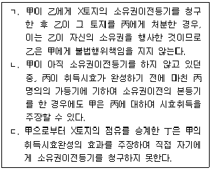
- ㄴ
- ㄷ
- ㄱ, ㄴ
- ㄱ, ㄷ
- ㄴ, ㄷ
(정답률: 알수없음)
31. 민법이 명문으로 공유물분할청구를 금지하는 경우는?
- 구분소유하는 건물과 그 부속물 중 공용하는 부분의 경우
- 주종을 구별할 수 없는 동산이 부합된 경우
- 수인이 공동으로 매장물을 발견한 경우
- 수인이 공동으로 유실물을 습득한 경우
- 수인이 공동으로 무주물을 선점한 경우
(정답률: 알수없음)
32. 명의신탁에 관한 설명으로 옳지 않은 것은? (다툼이 있으면 판례에 따름)
- 종중재산이 여러 사람에게 명의신탁된 경우, 그 수탁자들 상호간에는 형식상 공유관계가 성립한다.
- 3자간 등기명의신탁관계의 명의신탁자는 수탁자에게 명의신탁된 부동산의 소유권이전등기를 청구하지 못한다.
- 채무자는 채권을 담보하기 위하여 채권자에게 그 소유의 부동산에 관한 소유권이전등기를 할 수 있다.
- 부부 사이에 유효하게 성립한 명의신탁은 배우자 일방의 사망으로 잔존배우자와 사망한 배우자의 상속인에게 효력을 잃는다.
- 계약 상대방이 명의수탁자임을 알면서 체결한 매매계약의 효력으로 소유권이전등기를 받은 사람은 소유권을 취득한다.
(정답률: 알수없음)
33. 첨부에 관한 설명으로 옳지 않은 것은? (다툼이 있으면 판례에 따름)
- 타인이 그의 권원에 의하여 부동산에 부속한 물건은 이를 분리하여도 경제적 가치가 없으면 부동산소유자의 소유로 한다.
- 저당권의 효력은 다른 사정이 없으면 저당부동산에 부합된 물건에 미친다.
- 동일인 소유의 여러 동산들이 결합하는 것은 부합이 아니다.
- 부합의 원인은 인위적이든 자연적이든 불문한다.
- 타인의 동산에 가공한 때에는 가공물의 소유권은 가공자의 소유로 한다.
(정답률: 알수없음)
34. 법정지상권에 관한 설명으로 옳지 않은 것을 모두 고른 것은? (다툼이 있으면 판례에 따름)
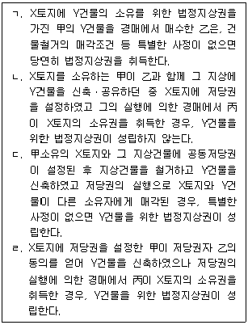
- ㄱ, ㄷ
- ㄱ, ㄹ
- ㄱ, ㄴ, ㄹ
- ㄴ, ㄷ, ㄹ
- ㄱ, ㄴ, ㄷ, ㄹ
(정답률: 알수없음)
35. 지역권에 관한 설명으로 옳은 것은? (다툼이 있으면 판례에 따름)
- 지역권은 점유를 요건으로 하는 물권이다.
- 지역권은 독립하여 양도ㆍ처분할 수 있는 물권이다.
- 통행지역권은 지료의 약정을 성립요건으로 한다.
- 통행지역권의 시효취득을 위하여 지역권이 계속되고 표현되면 충분하고 승역지 위에 통로를 개설할 필요는 없다.
- 통행지역권을 시효취득한 요역지소유자는, 특별한 사정이 없으면 승역지의 사용으로 그 소유자가 입은 손해를 보상하여야 한다.
(정답률: 알수없음)
36. 전세권에 관한 설명으로 옳은 것은? (다툼이 있으면 판례에 따름)
- 목적물의 인도는 전세권의 성립요건이다.
- 전세권이 존속하는 중에 전세권자는 전세권을 그대로 둔 채 전세금반환채권만을 확정적으로 양도하지 못한다.
- 전세목적물이 처분된 때에도 전세권을 설정한 양도인이 전세권관계에서 생기는 권리ㆍ의무의 주체이다.
- 전세권은 전세권설정등기의 말소등기 없이 전세기간의 만료로 당연히 소멸하지만, 전세권저당권이 설정된 때에는 그렇지 않다.
- 전세권저당권이 설정된 경우, 제3자의 압류 등 다른 사정이 없으면 전세권이 기간만료로 소멸한 때에 전세권설정자는 저당권자에게 전세금을 지급하여야 한다.
(정답률: 알수없음)
37. 민사유치권에 관한 설명으로 옳지 않은 것은? (다툼이 있으면 판례에 따름)
- 수급인은 특별한 사정이 없으면 그의 비용과 노력으로 완공한 건물에 유치권을 가지지 못한다.
- 물건의 소유자는 그 물건을 점유하는 제3자가 비용을 지출할 때에 점유권원이 없음을 알았거나 중대한 과실로 몰랐음을 증명하여 비용상환청구권에 기한 유치권의 주장을 배척할 수 있다.
- 채권과 물건 사이에 견련관계가 있더라도, 그 채무불이행으로 인한 손해배상채권과 그 물건 사이의 견련관계는 인정되지 않는다.
- 저당권의 실행으로 부동산에 경매개시결정의 기입등기가 이루어지기 전에 유치권을 취득한 사람은 경매절차의 매수인에게 이를 행사할 수 있다.
- 토지 등 그 성질상 다른 부분과 쉽게 분할할 수 있는 물건의 경우, 그 일부를 목적으로 하는 유치권이 성립할 수 있다.
(정답률: 알수없음)
38. 질권에 관한 설명으로 옳지 않은 것은? (다툼이 있으면 판례에 따름)
- 질권은 질물 전부에 효력이 미친다.
- 저당권으로 담보된 채권에 설정된 질권은 그 저당권등기에 질권의 부기등기를 하여야 저당권에 효력이 미친다.
- 금전채권에 질권을 취득한 질권자는 자기채권액의 범위에서 직접 추심하여 변제에 충당할 수 있다.
- 질권설정자는 피담보채무의 변제기 이후의 약정으로 질권자에게 변제에 갈음하여 질물의 소유권을 이전할 수 있다.
- 금전채무자가 채권자에게 담보물을 제공한 경우, 특별한 사정이 없으면 채무자의 변제의무와 채권자의 담보물반환의무는 동시이행관계에 있다.
(정답률: 알수없음)
39. 저당권에 관한 설명으로 옳은 것은? (다툼이 있으면 판례에 따름)
- 저당부동산의 소유권이 제3자에게 양도된 후 피담보채권이 변제된 때에는 저당권을 설정한 종전소유자도 저당권설정등기의 말소를 청구할 권리가 있다.
- 저당권을 설정한 사람이 채무자가 아닌 경우, 그는 원본채권이 이행기를 경과한 때부터 1년분의 범위에서 지연배상을 변제할 책임이 있다.
- 근저당권의 채무자가 피담보채권의 일부를 변제한 경우, 변제한 만큼 채권최고액이 축소된다.
- 저당권자는 배당기일 전까지 물상대위권을 행사하여 우선변제를 받을 수 있다.
- 대체물채권을 담보하기 위하여 저당권을 설정한 경우, 피담보채권액은 채권을 이행할 때의 시가로 산정한 금액으로 한다.
(정답률: 알수없음)
40. 저당권에 관한 설명으로 옳지 않은 것은? (다툼이 있으면 판례에 따름)
- 저당권의 효력은 천연과실뿐만 아니라 법정과실에도 미친다.
- 저당권으로 담보된 채권을 양수하였으나 아직 대항요건을 갖추지 못한 양수인도 저당권이전의 부기등기를 마치고 저당권실행의 요건을 갖추면 경매를 신청할 수 있다.
- 후순위담보권자가 경매를 신청한 경우, 선순위근저당권의 피담보채권은 매수인이 경락대금을 완납하여 그 근저당권이 소멸하는 때에 확정된다.
- 저당권의 이전을 위하여 저당권의 양도인과 양수인, 그리고 저당권설정자 사이의 물권적 합의와 등기가 있어야 한다.
- 공동저당관계의 등기를 공동저당권의 성립요건이나 대항요건이라고는 할 수 없다.
(정답률: 알수없음)
2과목: 경제학원론
41. X재의 수요곡선이 Q = 10-2P일 때, 수요의 가격탄력성이 1이 되는 가격은? (단, Q는 수요량, P는 가격)
- 1
- 1.5
- 2
- 2.5
- 5
(정답률: 알수없음)
42. A기업의 총비용곡선이 TC = 100+Q2일 때, 옳은 것은? (단, Q는 생산량)
- 평균가변비용곡선은 U자 모양을 갖는다.
- 평균고정비용곡선은 수직선이다.
- 한계비용곡선은 수평선이다.
- 생산량이 10 일 때 평균비용과 한계비용이 같다.
- 평균비용의 최솟값은 10 이다.
(정답률: 알수없음)
43. 여가(L) 및 복합재(Y)에 대한 甲의 효용은 U(L, Y) = √L + √Y 이고, 복합재의 가격은 1이다. 시간당 임금이 w일 때, 甲의 여가 시간이 L 이면, 소득은 w(24-L) 이 된다. 시간당 임금 w가 3에서 5로 상승할 때, 효용을 극대화하는 甲의 여가시간 변화는?
- 1만큼 증가한다.
- 2만큼 증가한다.
- 변화가 없다.
- 2만큼 감소한다.
- 1만큼 감소한다.
(정답률: 알수없음)
44. X재 산업의 역공급함수는 P = 440+Q 이고, 역수요함수는 P= 1,200-Q 이다. X재의 생산으로 외부편익이 발생하는데, 외부한계편익함수는 EMB = 60-0.⑤Q 이다. 정부가 X재를 사회적 최적수준으로 생산하도록 보조금 정책을 도입할 때, 생산량 1단위당 보조금은? (단, P는 가격, Q는 수량)
- 20
- 30
- 40
- 50
- 60
(정답률: 알수없음)
45. A기업의 생산함수가 Q = 4L+8K 이다. 노동가격은 3이고 자본가격은 5일 때, 재화 120을 생산하기 위해 비용을 최소화하는 생산요소 묶음은? (단, Q는 생산량, L은 노동, K는 자본)
- L = 0, K = 15
- L = 0, K = 25
- L = 10, K = 10
- L = 25, K = 0
- L = 30, K = 0
(정답률: 알수없음)
46. 독점기업 A의 한계비용은 10이고 고정비용은 없다. A기업 제품에 대한 소비자의 역수요함수는 P = 90-2Q 이다. A기업은 내부적으로 아래와 같이 2차에 걸친 판매 전략을 채택하였다.
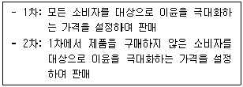
A기업이 설정한 (ㄱ)1차 판매 가격과 (ㄴ)2차 판매 가격은? (단, 소비자는 제품을 한 번만 구매하고, 소비자 간 재판매할 수 없다.)
- ㄱ: 30, ㄴ: 20
- ㄱ: 40, ㄴ: 20
- ㄱ: 40, ㄴ: 30
- ㄱ: 50, ㄴ: 30
- ㄱ: 60, ㄴ: 30
(정답률: 알수없음)
47. 효용을 극대화하는 甲의 효용함수는 U(x, y) = xy 이고, 甲의 소득은 96이다. X재 가격이 12, Y재 가격이 1 이다. X재 가격만 3 으로 하락할 때, (ㄱ)X재의 소비 변화와 (ㄴ)Y재의 소비 변화는? (단, x는 X재 소비량, y는 Y재 소비량)
- ㄱ: 증가, ㄴ: 증가
- ㄱ: 증가, ㄴ: 불변
- ㄱ: 증가, ㄴ: 감소
- ㄱ: 감소, ㄴ: 불변
- ㄱ: 감소, ㄴ: 증가
(정답률: 알수없음)
48. X재 시장의 수요곡선은 QD = 500-4P 이고, 공급곡선은 QS = -100+2P 이다. 시장 균형에서 정부가 P = 80 의 가격 상한을 설정할 때, (ㄱ)소비자잉여의 변화와 (ㄴ)생산자잉여의 변화는? (단, QD는 수요량, QS는 공급량, P는 가격)
- ㄱ: 증가, ㄴ: 증가
- ㄱ: 증가, ㄴ: 감소
- ㄱ: 불변, ㄴ: 불변
- ㄱ: 감소, ㄴ: 증가
- ㄱ: 감소, ㄴ: 감소
(정답률: 알수없음)
49. 완전경쟁시장에서 A기업의 단기총비용함수는
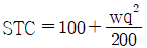
이다. 임금이 4이고, 시장 가격이 1 일 때 단기공급량은? (단, w는 임금, q는 생산량)- 10
- 25
- 50
- 100
- 200
(정답률: 알수없음)
50. 효용을 극대화하는 甲의 효용함수는 U(x, y) = min{x, y} 이다. 소득이 1,800, X재와 Y재의 가격은 각각 10 이다. X재 가격만 8 로 하락할 때, 옳은 것을 모두 고른 것은? (단, x는 X재 소비량, y는 Y재 소비량)
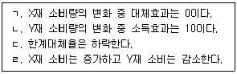
- ㄱ, ㄴ
- ㄱ, ㄷ
- ㄴ, ㄷ
- ㄴ, ㄹ
- ㄷ, ㄹ
(정답률: 알수없음)
51. 그림과 같이 완전경쟁시장이 독점시장으로 전환되었다. 소비자로부터 독점기업에게 이전되는 소비자잉여는? (단, MR은 한계수입, MC는 한계비용, D는 시장수요 곡선으로 불변이다. 독점기업은 이윤극대화를 추구한다.)
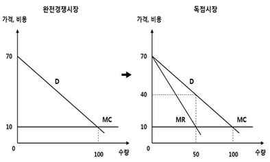
- 0
- 750
- 1,500
- 2,250
- 3,000
(정답률: 알수없음)
52. 보수 행렬이 아래와 같은 전략형 게임(strategic form game)에서 보수 a값의 변화에 따른 설명으로 옳은 것은? (단, 보수 행렬의 괄호 안 첫 번째 값은 甲의 보수, 두 번째 값은 乙의 보수이다.)
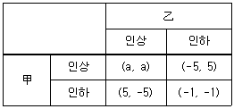
- a ＞ 5이면, (인상, 인상)이 유일한 내쉬균형이다.
- -1 ＜ a ＜ 5 이면, 인상은 甲의 우월전략이다.
- a ＜ -5 이면, 내쉬균형이 두 개 존재한다.
- a ＜ 5이면, (인하, 인하)가 유일한 내쉬균형이다.
- a = 5인 경우와 a ＜ 5인 경우의 내쉬균형은 동일하다.
(정답률: 알수없음)
53. 공공재에 대한 甲과 乙의 수요함수가 각각 P甲 = 80-Q , P乙 = 140-Q 이다. 이에 관한 설명으로 옳은 것을 모두 고른 것은? (단, P는 가격, Q는 수량)
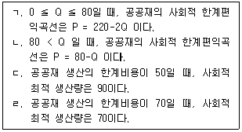
- ㄱ, ㄴ
- ㄱ, ㄷ
- ㄴ, ㄷ
- ㄴ, ㄹ
- ㄷ, ㄹ
(정답률: 알수없음)
54. 甲의 소득은 24이고, X재와 Y재만 소비한다. 甲은 두 재화의 가격이 PX = 4, PY = 2 일 때 A(x=5, y=1)를 선택했고, 두 재화의 가격이 PX = 3, PY = 3 으로 변화함에 따라 B(x=2, y=6)를 선택했다. 甲의 선택에 관한 설명으로 옳은 것을 모두 고른 것은? (단, x는 X재 소비량, y는 Y재 소비량)
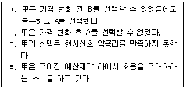
- ㄱ, ㄴ
- ㄱ, ㄷ
- ㄴ, ㄷ
- ㄴ, ㄹ
- ㄷ, ㄹ
(정답률: 알수없음)
55. 맥주 시장의 수요함수가 QD = 100-4P-PC+0.2I 일 때, 옳은 것을 모두 고른 것은? (단, QD는 맥주 수요량, P는 맥주 가격, PC는 치킨 가격, 는 소득)
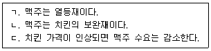
- ㄱ
- ㄷ
- ㄱ, ㄴ
- ㄴ, ㄷ
- ㄱ, ㄴ, ㄷ
(정답률: 알수없음)
56. 완전경쟁시장에서 기업이 모두 동일한 장기평균비용함수
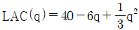
과 장기한계비용함수 LMC(q) = 40-12q+q2 을 갖는다. 시장수요곡선은 D(P) = 2,200-100P 일 때, 장기균형에서 시장에 존재하는 기업의 수는? (단, q는 개별기업의 생산량, P는 가격)- 12
- 24
- 50
- 100
- 200
(정답률: 알수없음)
57. A기업의 생산함수는 Q = 5L0.5K0.5이다. 장기에 생산량이 증가할 때, 이 기업의 (ㄱ)평균비용의 변화와 (ㄴ)한계비용의 변화는? (단, L은 노동, K는 자본, Q는 생산량)
- ㄱ: 증가, ㄴ: 증가
- ㄱ: 증가, ㄴ: 감소
- ㄱ: 일정, ㄴ: 일정
- ㄱ: 감소, ㄴ: 증가
- ㄱ: 감소, ㄴ: 일정
(정답률: 알수없음)
58. 두 재화 X와 Y를 소비하는 소비자 甲과 乙이 존재하는 순수교환경제를 가정한다. 두 소비자의 효용함수는 U(x, y) = xy로 동일하고, 甲의 초기부존은 (x=10, y=5), 乙의 초기부존은 (x=5, y=10)일 때, 옳은 것을 모두 고른 것은? (단, x는 X재 소비량, y는 Y재 소비량)
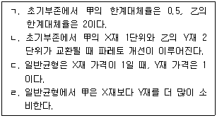
- ㄱ, ㄴ
- ㄱ, ㄷ
- ㄴ, ㄷ
- ㄴ, ㄹ
- ㄷ, ㄹ
(정답률: 알수없음)
59. 완전경쟁시장에서 공급곡선은 완전 비탄력적이고 수요곡선은 우하향한다. 현재 시장균형가격이 20 일 때, 정부가 판매되는 제품 1단위당 4만큼 세금을 부과할 경우 (ㄱ)판매자가 받는 가격과 (ㄴ)구입자가 내는 가격은?
- ㄱ: 16, ㄴ: 16
- ㄱ: 16, ㄴ: 20
- ㄱ: 18, ㄴ: 22
- ㄱ: 20, ㄴ: 20
- ㄱ: 20, ㄴ: 24
(정답률: 알수없음)
60. 현재 A기업에서 자본의 한계생산은 노동의 한계생산보다 2배 크고, 노동가격이 8, 자본가격이 4 이다. 이 기업이 동일한 양의 최종생산물을 산출하면서도 비용을 줄이는 방법은? (단, A기업은 노동과 자본만을 사용하고, 한계생산은 체감한다.)
- 자본투입을 늘리고 노동투입을 줄인다.
- 노동투입을 늘리고 자본투입을 줄인다.
- 비용을 더 이상 줄일 수 없다.
- 자본투입과 노동투입을 모두 늘린다.
- 자본투입과 노동투입을 모두 줄인다.
(정답률: 알수없음)
61. 단기 완전경쟁시장에서 이윤극대화하는 A기업의 현재 생산량에서 한계비용은 50, 평균가변비용은 45, 평균비용은 55 이다. 시장가격이 50일 때, 옳은 것을 모두 고른 것은?
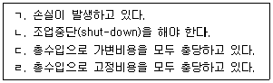
- ㄱ, ㄴ
- ㄱ, ㄷ
- ㄴ, ㄷ
- ㄴ, ㄹ
- ㄷ, ㄹ
(정답률: 알수없음)
62. 효율임금이론에 관한 설명으로 옳지 않은 것은?
- 높은 임금을 지급할수록 노동자 생산성이 높아진다.
- 높은 임금은 이직률을 낮출 수 있다.
- 높은 임금은 노동자의 도덕적 해이 가능성을 낮출 수 있다.
- 효율임금은 시장균형임금보다 높다.
- 기업이 임금을 낮출 경우 생산성이 낮은 노동자보다 높은 노동자가 기업에 남을 확률이 높다.
(정답률: 알수없음)
63. 경제성장모형에서 甲국의 총생산함수가 Q = AL0.75K0.25일 때, 옳지 않은 것은? (단, Q는 생산량, L은 노동량, K는 자본량, 시장은 완전경쟁시장이다.)
- 자본탄력성은 0.25이다.
- 노동분배율은 자본분배율보다 크다.
- A는 총요소생산성이다.
- 노동량, 자본량 및 총요소생산성이 각각 10% 씩 증가하면 생산량은 10% 증가한다.
- 총생산함수는 규모에 대한 수익 불변이다.
(정답률: 알수없음)
64. 소비이론에 관한 설명으로 옳지 않은 것은?
- 생애주기가설에 따르면 장기적으로 평균소비성향이 일정하다.
- 항상소득가설에 따르면 단기적으로 소득 증가는 평균소비성향을 감소시킨다.
- 케인즈(M. Keynes)의 소비가설에서 이자율은 소비에 영향을 주지 않는다.
- 피셔(I. Fisher)의 기간 간 소비선택이론에 따르면 이자율은 소비에 영향을 준다.
- 임의보행(random walk)가설에 따르면 소비의 변화는 예측할 수 있다.
(정답률: 알수없음)
65. A국에서 인플레이션 갭과 산출량 갭이 모두 확대될 때, 테일러 준칙(Taylor's rule)에 따른 중앙은행의 정책은?
- 정책금리를 인상한다.
- 정책금리를 인하한다.
- 정책금리를 조정하지 않는다.
- 지급준비율을 인하한다.
- 지급준비율을 변경하지 않는다.
(정답률: 알수없음)
66. 인구 증가와 기술진보가 없는 솔로우 성장모형에서 황금률 균제상태가 달성되는 조건은?
- 자본의 한계생산이 최대일 때
- 노동자 1인당 자본량이 최대일 때
- 자본의 한계생산이 감가상각률과 같을 때
- 노동의 한계생산이 저축률과 같을 때
- 자본의 한계생산이 한계소비성향과 같을 때
(정답률: 알수없음)
67. 유동성함정(liquidity trap)에 관한 설명으로 옳은 것을 모두 고른 것은?
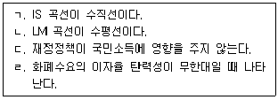
- ㄱ, ㄷ
- ㄴ, ㄹ
- ㄷ, ㄹ
- ㄱ, ㄴ, ㄷ
- ㄴ, ㄷ, ㄹ
(정답률: 알수없음)
68. 2015년과 2020년 빅맥 가격이 아래와 같다. 일물일가의 법칙이 성립할 때, 옳지 않은 것은? (단, 환율은 빅맥 가격을 기준으로 표시한다.)
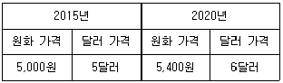
- 빅맥의 원화 가격은 두 기간 사이에 8% 상승했다.
- 빅맥의 1달러 당 원화 가격은 두 기간 사이에 10% 하락했다.
- 달러 대비 원화의 가치는 두 기간 사이에 10% 상승했다.
- 달러 대비 원화의 실질환율은 두 기간 사이에 변하지 않았다.
- 2020년 원화의 명목환율은 구매력평가 환율보다 낮다.
(정답률: 알수없음)
69. 한국과 미국의 명목이자율은 각각 3%, 2% 이다. 미국의 물가상승률이 2% 로 예상되며 현재 원/달러 환율은 1,000원일 때, 옳은 것을 모두 고른 것은? (단, 구매력평가설과 이자율평가설이 성립한다.)
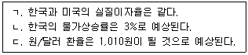
- ㄱ
- ㄴ
- ㄱ, ㄴ
- ㄴ, ㄷ
- ㄱ, ㄴ, ㄷ
(정답률: 알수없음)
70. 총수요 충격 및 총공급 충격에 관한 설명으로 옳지 않은 것은? (단, 총수요곡선은 우하향, 총공급곡선은 우상향)
- 총수요 충격으로 인한 경기변동에서 물가는 경기순행적이다.
- 총공급 충격으로 인한 경기변동에서 물가는 경기역행적이다.
- 총공급 충격에 의한 스태그플레이션은 합리적 기대 가설이 주장하는 정책무력성의 근거가 될 수 있다.
- 명목임금이 하방 경직적일 경우 음(-)의 총공급 충격이 발생하면 거시경제의 불균형이 지속될 수 있다.
- 기술진보로 인한 양(+)의 총공급 충격은 자연실업률 수준을 하락시킬 수 있다.
(정답률: 알수없음)
71. 현재와 미래 두 기간에 걸쳐 소비하는 甲의 현재소득 1,000, 미래소득 300, 현재 부(wealth) 200이다. 이자율이 2%로 일정할 때, 甲의 현재소비가 800 이라면 최대 가능 미래소비는?
- 504
- 700
- 704
- 708
- 916
(정답률: 알수없음)
72. A국 국민소득계정의 구성 항목이 아래와 같다. A국의 (ㄱ)GDP와 (ㄴ)재정수지는?
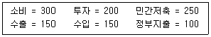
- ㄱ: 500, ㄴ: -50
- ㄱ: 500, ㄴ: 100
- ㄱ: 600, ㄴ: -50
- ㄱ: 600, ㄴ: 100
- ㄱ: 750, ㄴ: 100
(정답률: 알수없음)
73. 자본 이동이 완전한 먼델-플레밍(Mundell-Fleming)모형에서 A국의 정부지출 확대 정책의 효과에 관한 설명으로 옳은 것은? (단, A국은 소규모 개방경제이며, A국 및 해외 물가 수준은 불변, IS 곡선은 우하향, LM 곡선은 우상향)
- 환율제도와 무관하게 A국의 이자율이 하락한다.
- 고정환율제도에서는 A국의 국민소득이 증가한다.
- 변동환율제도에서는 A국의 국민소득이 감소한다.
- 고정환율제도에서는 A국의 경상수지가 개선된다.
- 변동환율제도에서는 A국의 통화가치가 하락한다.
(정답률: 알수없음)
74. 민간은 화폐를 현금과 요구불예금으로 각각 1/2씩 보유하고, 은행은 예금의 1/3을 지급준비금으로 보유한다. 통화공급을 150만큼 늘리기 위한 중앙은행의 본원통화 증가분은? (단, 통화량은 현금과 요구불예금의 합계이다.)
- 50
- 100
- 150
- 200
- 250
(정답률: 알수없음)
75. 소규모 개방경제의 재화시장 균형에서 국내총생산(Y)이 100으로 고정되어 있고, 소비 C = 0.6Y, 투자 I = 40-r, 순수출 NX = 12-2ε 이다. 세계 이자율이 10 일 때, 실질환율은? (단, r은 국내 이자율, ε은 실질환율, 정부지출은 없으며, 국가 간 자본이동은 완전하다.)
- 0.8
- 1
- 1.2
- 1.4
- 1.5
(정답률: 알수없음)
76. 아래 개방경제모형에서 정부지출과 세금을 똑같이 100만큼 늘리면 (ㄱ)균형국민소득의 변화와 (ㄴ)경상수지의 변화는? (단, Y는 국민소득, T는 조세이다.)
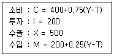
- ㄱ: 0, ㄴ: 25
- ㄱ: 100, ㄴ: 0
- ㄱ: 200, ㄴ: -25
- ㄱ: 300, ㄴ: -50
- ㄱ: 400, ㄴ: -75
(정답률: 알수없음)
77. 케인즈의 국민소득결정모형에서 소비 C = 0.7Y이고, 투자 I = 80 이다. 정부지출이 10 에서 20으로 증가할 때, 균형국민소득의 증가분은? (단, C는 소비, Y는 국민소득, I는 투자)
- 10/3
- 5
- 100/7
- 100/3
- 50
(정답률: 알수없음)
78. 경기변동이론에 관한 설명으로 옳은 것은?
- 실물경기변동(real business cycle)이론에서 가계는 기간별로 최적의 소비 선택을 한다.
- 실물경기변동이론은 가격의 경직성을 전제한다.
- 실물경기변동이론은 화폐의 중립성을 가정하지 않는다.
- 가격의 비동조성(staggering pricing)이론은 새고전학파(New Classical) 경기변동이론에 속한다.
- 새케인즈학파(New Keynesian)는 공급충격이 경기변동의 원인이라고 주장한다.
(정답률: 알수없음)
79. 폐쇄경제 IS-LM 모형에서 물가 수준이 하락할 경우 새로운 균형에 관한 설명으로 옳은 것을 모두 고른 것은? (단, 초기 경제는 균형 상태이며, IS 곡선은 우하향, LM 곡선은 우상향)
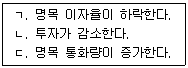
- ㄱ
- ㄴ
- ㄱ, ㄷ
- ㄴ, ㄷ
- ㄱ, ㄴ, ㄷ
(정답률: 알수없음)
80. 리카디언 등가(Ricardian equivalence) 정리에 관한 설명으로 옳지 않은 것은?
- 민간 경제주체는 합리적 기대를 한다.
- 소비자가 차입 제약에 직면하면 이 정리는 성립되지 않는다.
- 소비자가 근시안적 견해를 가지면 이 정리는 성립되지 않는다.
- 현재의 감세가 현재의 민간소비를 증가시킨다는 주장과는 상반된 것이다.
- 정부가 미래의 정부지출을 축소한다는 조건에서 현재 조세를 줄이는 경우에 현재의 민간소비는 변하지 않는다.
(정답률: 알수없음)
3과목: 부동산학원론
81. 토지의 특성에 관한 설명으로 옳지 않은 것은?
- 부동성으로 인해 지역분석을 필요로 하게 된다.
- 용도의 다양성은 최유효이용의 판단근거가 된다.
- 영속성은 부동산활동에 대해서 장기적 배려를 필연적으로 고려하게 한다.
- 합병ㆍ분할의 가능성은 토지의 이행과 전환을 가능하게 한다.
- 개별성으로 인해 일물일가의 법칙이 적용되지 않고, 부동산시장에서 부동산상품 간에 완벽한 대체는 불가능하다.
(정답률: 알수없음)
82. 다음의 내용과 관련된 토지의 특성은?
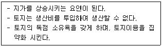
- 부동성
- 부증성
- 영속성
- 개별성
- 인접성
(정답률: 알수없음)
83. 다음의 부동산 권리분석 특별원칙은?
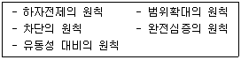
- 능률성의 원칙
- 탐문주의 원칙
- 증거주의 원칙
- 안전성의 원칙
- 사후확인의 원칙
(정답률: 알수없음)
84. ( )에 들어갈 내용으로 옳은 것은?
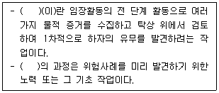
- 보정
- 심사
- 판독
- 면책사항
- 권리보증
(정답률: 알수없음)
85. 감정평가 실무기준상 권리금 감정평가방법에 관한 설명으로 옳지 않은 것은?
- 권리금을 감정평가할 때에는 유형ㆍ무형의 재산마다 개별로 감정평가하는 것을 원칙으로 한다.
- 권리금을 개별로 감정평가하는 것이 곤란하거나 적절하지 아니한 경우에는 일괄하여 감정평가할 수 있으며, 이 경우 감정평가액은 유형재산가액과 무형재산가액으로 구분하지 않아야 한다.
- 유형재산을 감정평가할 때에는 주된 방법으로 원가법을 적용하여야 한다.
- 무형재산을 감정평가할 때에는 주된 방법으로 수익환원법을 적용하여야 한다.
- 유형재산과 무형재산을 일괄하여 감정평가할 때에는 주된 방법으로 수익환원법을 적용하여야 한다.
(정답률: 알수없음)
86. 감정평가에 관한 규칙상 용어의 정의로 옳지 않은 것은?
- 기준시점이란 대상물건의 감정평가액을 결정하는 기준이 되는 날짜를 말한다.
- 가치형성요인이란 대상물건의 경제적 가치에 영향을 미치는 일반요인, 지역요인 및 개별요인 등을 말한다.
- 동일수급권이란 대상부동산과 대체ㆍ경쟁 관계가 성립하고 가치 형성에 서로 영향을 미치는 관계에 있는 다른 부동산이 존재하는 권역을 말하며, 인근지역과 유사지역을 포함한다.
- 임대사례비교법이란 대상물건과 가치형성요인이 같거나 비슷한 물건의 임대사례와 비교하여 대상물건의 현황에 맞게 사정보정, 시점수정, 가치형성요인 비교 등의 과정을 거쳐 대상물건의 임대료를 산정하는 감정평가방법을 말한다.
- 수익분석법이란 대상물건이 장래 산출할 것으로 기대되는 순수익이나 미래의 현금흐름을 환원하거나 할인하여 대상물건의 가액을 산정하는 감정평가방법을 말한다.
(정답률: 알수없음)
87. 다음과 같은 조건에서 수익환원법에 의해 평가한 대상부동산의 가액은? (단, 주어진 조건에 한함)
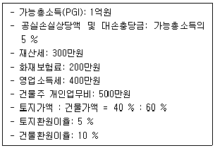
- 1,025,000,000원
- 1,075,000,000원
- 1,125,000,000원
- 1,175,000,000원
- 1,225,000,000원
(정답률: 알수없음)
88. 감정평가에 관한 규칙상 주된 감정평가방법 중 거래사례비교법을 적용하는 것은?
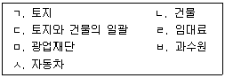
- ㄱ, ㄴ, ㅂ
- ㄱ, ㅁ, ㅅ
- ㄴ, ㅁ, ㅅ
- ㄷ, ㄹ, ㅁ
- ㄷ, ㅂ, ㅅ
(정답률: 알수없음)
89. 다음 자료를 활용하여 거래사례비교법으로 평가한 대상토지의 감정평가액은? (단, 주어진 조건에 한함)
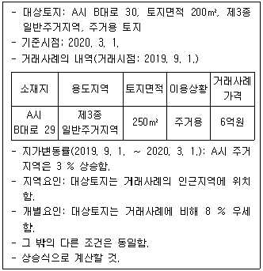
- 531,952,000원
- 532,952,000원
- 533,952,000원
- 534,952,000원
- 535,952,000원
(정답률: 알수없음)
90. 다음과 같은 조건에서 대상부동산의 수익가액 산정시 적용할 환원이율(capitalization rate)은? (단, 소수점 셋째자리에서 반올림하여 둘째자리까지 구함)
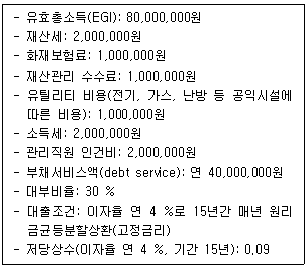
- 3.93 %
- 4.93 %
- 5.93 %
- 6.93 %
- 7.93 %
(정답률: 알수없음)
91. A도시와 B도시 사이에 C도시가 있다. 레일리의 소매인력법칙을 적용할 경우, C도시에서 A도시, B도시로 구매 활동에 유입되는 비율은? (단, C도시의 인구는 모두 A도시 또는 B도시에서 구매하고, 주어진 조건에 한함)
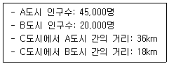
- A: 36 %, B: 64 %
- A: 38 %, B: 62 %
- A: 40 %, B: 60 %
- A: 42 %, B: 58 %
- A: 44 %, B: 56 %
(정답률: 알수없음)
92. 다음과 같은 지대이론을 주장한 학자는?
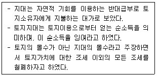
- 리카도(D. Ricardo)
- 알론소(W. Alonso)
- 헨리 조지(H. George)
- 마르크스(K. Marx)
- 튀넨(J.H. von Thünen)
(정답률: 알수없음)
93. 디파스퀠리-위튼(DiPasquale & Wheaton)의 사분면 모형에 관한 설명으로 옳지 않은 것은? (단, 주어진 조건에 한함)
- 1사분면에서는 부동산공간시장의 단기공급곡선과 수요곡선에 의해 균형임대료가 결정된다.
- 2사분면에서는 부동산의 임대료가 가격으로 환원되는 부동산자산시장의 조건을 나타낸다.
- 3사분면에서 신규 부동산의 건설량은 부동산가격과 부동산개발비용의 함수로 결정된다.
- 4사분면에서는 신규 부동산의 건설량과 재고의 멸실량이 변화하여야 부동산공간시장의 균형을 이룰 수 있다.
- 이 모형은 부동산이 소비재이면서도 투자재라는 특성을 전제로 한다.
(정답률: 알수없음)
94. 부동산시장에 대한 정부의 직접개입방식으로 옳게 묶인 것은?
- 토지비축제, 개발부담금제도
- 수용제도, 선매권제도
- 최고가격제도, 부동산조세
- 보조금제도, 용도지역지구제
- 담보대출규제, 부동산거래허가제
(정답률: 알수없음)
95. 우리나라에서 현재(2020. 3. 7.) 시행하지 않는 부동산정책을 모두 고른 것은?
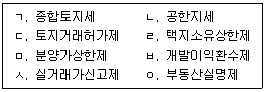
- ㄱ, ㄴ, ㄹ
- ㄱ, ㅁ, ㅂ
- ㄱ, ㅂ, ㅅ
- ㄴ, ㄷ, ㅁ
- ㄹ, ㅅ, ㅇ
(정답률: 알수없음)
96. 토지이용계획과 용도지역지구제에 관한 설명으로 옳지 않은 것은?
- 용도지역지구제는 토지이용규제의 대표적인 예로 들 수 있다.
- 용도지역지구제는 특정 토지를 용도지역이나 용도지구로 지정한 후 해당 토지의 이용을 지정목적에 맞게 제한하는 제도이다.
- 토지이용계획은 토지이용규제의 근간을 이루지만 법적 구속력을 가지고 있지는 않다.
- 용도지역지구제는 토지이용계획의 내용을 실현하는 수단으로서, 도시ㆍ군관리계획의 내용을 구성한다.
- 용도지역지구제에 따른 용도 지정 후, 관련법에 의해 사인의 토지이용이 제한되지 않는다.
(정답률: 알수없음)
97. 화폐의 시간적 가치를 고려하지 않는 부동산 투자타당성방법은?
- 수익성지수법(PI)
- 회계적수익률법(ARR)
- 현가회수기간법(PVP)
- 내부수익률법(IRR)
- 순현재가치법(NPV)
(정답률: 알수없음)
98. 다음의 개발방식은?
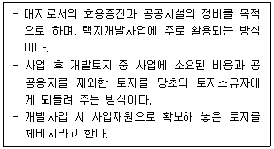
- 환지방식
- 신탁방식
- 수용방식
- 매수방식
- 합동방식
(정답률: 알수없음)
99. 건물의 관리방식에 관한 설명으로 옳지 않은 것은?
- 자가관리방식은 일반적으로 소유자의 지시와 통제 권한이 강하다.
- 위탁관리방식은 부동산관리를 전문적으로 하는 대행업체에게 맡기는 방식으로 사회적으로 신뢰도가 높고 성실한 대행업체를 선정하는 것이 중요하다.
- 혼합관리방식은 자가관리에서 위탁관리로 이행하는 과도기적 조치로 적합하다.
- 자가관리방식에 있어 소유자가 전문적 관리지식이 부족한 경우 효율적 관리에 한계가 있을 수 있다.
- 혼합관리방식에 있어 관리상의 문제가 발생할 경우, 책임소재에 대한 구분이 명확하다.
(정답률: 알수없음)
100. 개발업자 甲이 직면한 개발사업의 시장위험에 관한 설명으로 옳지 않은 것은?
- 개발기간 중에도 상황이 변할 수 있다는 점에 유의해야 한다.
- 개발기간이 장기화될수록 개발업자의 시장위험은 높아진다.
- 선분양은 개발업자가 부담하는 시장위험을 줄일 수 있다.
- 금융조달비용의 상승과 같은 시장의 불확실성은 개발업자에게 시장위험을 부담시킨다.
- 후분양은 개발업자의 시장위험을 감소시킨다.
(정답률: 알수없음)
101. 부동산개발업의 관리 및 육성에 관한 법률상 부동산개발에 해당하지 않는 행위는?
- 토지를 건설공사의 수행으로 조성하는 행위
- 토지를 형질변경의 방법으로 조성하는 행위
- 시공을 담당하는 행위
- 건축물을 건축기준에 맞게 용도변경하는 행위
- 공작물을 설치하는 행위
(정답률: 알수없음)
102. 부동산 증권에 관한 설명으로 옳은 것은?
- 저당이체증권(MPTS)의 모기지 소유권과 원리금 수취권은 모두 투자자에게 이전된다.
- 지불이체채권(MPTB)의 모기지 소유권은 투자자에게 이전되고, 원리금 수취권은 발행자에게 이전된다.
- 저당담보부채권(MBB)의 조기상환위험과 채무불이행 위험은 투자자가 부담한다.
- 다계층증권(CMO)은 지분형증권으로만 구성되어 있다.
- 상업용 저당증권(CMBS)은 반드시 공적 유동화중개기관을 통하여 발행된다.
(정답률: 알수없음)
103. 프로젝트 금융의 특징에 관한 설명으로 옳지 않은 것은?
- 사업자체의 현금흐름을 근거로 자금을 조달하고, 원리금 상환도 해당 사업에서 발생하는 현금흐름에 근거한다.
- 사업주의 입장에서는 비소구(non-recourse) 또는 제한적 소구(limited-recourse) 방식이므로 상환 의무가 제한되는 장점이 있다.
- 금융기관의 입장에서는 부외금융(off-balance sheet financing)에 의해 채무수용능력이 커지는 장점이 있다.
- 금융기관의 입장에서는 금리와 수수료 수준이 높아 일반적인 기업금융보다 높은 수익을 얻을 수 있는 장점이 있다.
- 복잡한 계약에 따른 사업의 지연과 이해당사자 간의 조정의 어려움은 사업주와 금융기관 모두의 입장에서 단점으로 작용한다.
(정답률: 알수없음)
104. 저당대출의 상환방식에 관한 설명으로 옳은 것은?
- 원금균등분할상환(CAM) 방식의 경우, 원리금의 합계가 매기 동일하다.
- 원리금균등분할상환(CPM) 방식의 경우, 초기에는 원리금에서 이자가 차지하는 비중이 높으나, 원금을 상환해 가면서 원리금에서 이자가 차지하는 비중이 줄어든다.
- 다른 조건이 일정하다면, 대출채권의 듀레이션(평균 회수기간)은 원리금균등분할상환(CPM) 방식이 원금균등분할상환(CAM) 방식보다 짧다.
- 체증분할상환(GPM) 방식은 장래 소득이 줄어들 것으로 예상되는 차입자에게 적합한 대출방식이다.
- 거치식(Interest-only Mortgage) 방식은 대출자 입장에서 금리수입이 줄어드는 상환방식으로, 상업용 부동산 저당대출보다 주택 저당대출에서 주로 활용된다.
(정답률: 알수없음)
1⑤. 다음 민간투자사업방식을 바르게 연결한 것은?
- ㄱ: BTO방식, ㄴ: BTL방식, ㄷ: BOT방식, ㄹ: BOO방식
- ㄱ: BOT방식, ㄴ: BTL방식, ㄷ: BTO방식, ㄹ: BOO방식
- ㄱ: BOT방식, ㄴ: BTO방식, ㄷ: BOO방식, ㄹ: BTL방식
- ㄱ: BTL방식, ㄴ: BOT방식, ㄷ: BOO방식, ㄹ: BTO방식
- ㄱ: BOT방식, ㄴ: BOO방식, ㄷ: BTO방식, ㄹ: BTL방식
(정답률: 알수없음)
106. 다음의 조건을 가진 A부동산의 대부비율(LTV)은? (단, 주어진 조건에 한함)
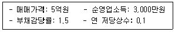
- 10 %
- 20 %
- 30 %
- 40 %
- 50 %
(정답률: 알수없음)
107. A는 주택 투자를 위해 은행으로부터 다음과 같은 조건으로 대출을 받았다. A가 7년 후까지 원리금을 정상적으로 상환했을 경우, 미상환 원금잔액은? (단, 주어진 조건에 한함. 1.04-7≒0.76, 1.04-13≒0.6, 1.04-20≒0.46으로 계산. 천원 단위에서 반올림)
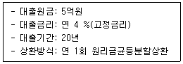
- 2억 2,222만원
- 3억 263만원
- 3억 7,037만원
- 3억 8,333만원
- 3억 9,474만원
(정답률: 알수없음)
108. 부동산 투자분석 기법에 관한 설명으로 옳지 않은 것은?
- 다른 조건이 일정하다면, 승수법에서는 승수가 클수록 더 좋은 투자안이다.
- 내부수익률(IRR)은 순현재가치(NPV)를 “0”으로 만드는 할인율이다.
- 내부수익률(IRR)이 요구수익률보다 클 경우 투자한다.
- 순현재가치(NPV)가 “0”보다 클 경우 투자한다.
- 수익성지수(PI)가 “1”보다 클 경우 투자한다.
(정답률: 알수없음)
109. 다음은 투자 예정 부동산의 향후 1년 동안 예상되는 현금흐름이다. 연간 세후현금 흐름은? (단, 주어진 조건에 한함)
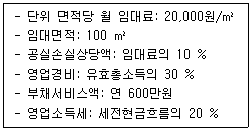
- 4,320,000원
- 6,384,000원
- 7,296,000원
- 9,120,000원
- 12,120,000원
(정답률: 알수없음)
110. 화폐의 시간가치에 관한 설명으로 옳지 않은 것은? (단, 다른 조건은 동일함)
- 은행으로부터 주택구입자금을 원리금균등분할상환 방식으로 대출한 가구가 매월 상환할 원리금을 계산하는 경우, 저당상수를 사용한다.
- 일시불의 미래가치계수는 이자율이 상승할수록 커진다.
- 연금의 현재가치계수와 저당상수는 역수관계이다.
- 연금의 미래가치계수와 감채기금계수는 역수관계이다.
- 3년 후에 주택자금 5억원을 만들기 위해 매 기간 납입해야 할 금액을 계산하는 경우, 연금의 미래가치계수를 사용한다.
(정답률: 알수없음)
111. 부동산 투자에서 위험과 수익에 관한 설명으로 옳지 않은 것은? (단, 주어진 조건에 한함)
- 투자자의 요구수익률에는 위험할증률이 포함된다.
- 투자자가 위험기피자일 경우, 위험이 증가할수록 투자자의 요구수익률도 증가한다.
- 투자자의 개별적인 위험혐오도에 따라 무위험률이 결정된다.
- 체계적 위험은 분산투자에 의해 제거될 수 없다.
- 위험조정할인율이란 장래 기대소득을 현재가치로 할인할 때 위험한 투자일수록 높은 할인율을 적용하는 것을 말한다.
(정답률: 알수없음)
112. 토지에 관한 설명으로 옳지 않은 것은?
- 빈지는 일반적으로 바다와 육지 사이의 해변 토지와 같이 소유권이 인정되며 이용실익이 있는 토지이다.
- 맹지는 타인의 토지에 둘러싸여 도로에 어떤 접속면도 가지지 못하는 토지이며, 건축법에 의해 원칙적으로 건물을 세울 수 없다.
- 법지는 택지경계와 접한 경사된 토지부분과 같이 법률상으로는 소유를 하고 있지만 이용실익이 없는 토지이다.
- 후보지는 부동산의 주된 용도적 지역인 택지지역, 농지지역, 임지지역 상호간에 전환되고 있는 지역의 토지이다.
- 이행지는 부동산의 주된 용도적 지역인 택지지역, 농지지역, 임지지역의 세분된 지역 내에서 용도전환이 이루어지고 있는 토지이다.
(정답률: 알수없음)
113. 공간으로서의 부동산에 관한 설명으로 옳지 않은 것은?
- 토지는 물리적 형태로서의 지표면과 함께 공중공간과 지하공간을 포함한다.
- 부동산활동은 3차원의 공간활동으로 농촌지역에서는 주로 지표공간이 활동의 중심이 되고, 도시지역에서는 입체공간이 활동의 중심이 된다.
- 지표권은 토지소유자가 지표상의 토지를 배타적으로 사용할 수 있는 권리를 말하며, 토지와 해면과의 분계는 최고만조시의 분계점을 표준으로 한다.
- 지중권 또는 지하권은 토지소유자가 지하공간으로부터 어떤 이익을 획득하거나 사용할 수 있는 권리를 말하며, 물을 이용할 수 있는 권리가 이에 포함된다.
- 공적 공중권은 일정 범위 이상의 공중공간을 공공기관이 공익목적의 실현을 위해 사용할 수 있는 권리를 말하며, 항공기 통행권이나 전파의 발착권이 이에 포함된다.
(정답률: 알수없음)
114. 한국표준산업분류(KSIC)에 따른 부동산업의 세분류 항목으로 옳지 않은 것은?
- 주거용 건물 건설업
- 부동산 임대업
- 부동산 개발 및 공급업
- 부동산 관리업
- 부동산 중개, 자문 및 감정평가업
(정답률: 알수없음)
115. A지역 오피스텔시장의 시장수요함수가 QD = 100-P 이고, 시장공급함수가 2QS = -40+3P 일 때, 오피스텔 시장의 균형에서 수요의 가격탄력성(εP)과 공급의 가격탄력성(η)은? (단, QD : 수요량, QS : 공급량, P : 가격이고, 수요의 가격탄력성과 공급의 가격탄력성은 점탄력성을 말하며, 다른 조건은 동일함)
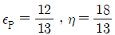
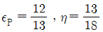
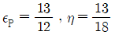
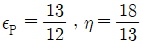
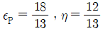
(정답률: 알수없음)
116. 부동산가치의 발생요인에 관한 설명으로 옳지 않은 것은?
- 유효수요는 구입의사와 지불능력을 가지고 있는 수요이다.
- 효용(유용성)은 인간의 필요나 욕구를 만족시킬 수 있는 재화의 능력이다.
- 효용(유용성)은 부동산의 용도에 따라 주거지는 쾌적성, 상업지는 수익성, 공업지는 생산성으로 표현할 수 있다.
- 부동산은 용도적 관점에서 대체성이 인정되고 있기 때문에 절대적 희소성이 아닌 상대적 희소성을 가지고 있다.
- 이전성은 법률적인 측면이 아닌 경제적인 측면에서의 가치발생요인이다.
(정답률: 알수없음)
117. 공인중개사법령에 관한 설명으로 옳은 것은?
- 공인중개사법에 의한 공인중개사자격을 취득한 자를 개업공인중개사라고 말한다.
- 선박법 및 선박등기법에 따라 등기된 20톤 이상의 선박은 공인중개사법에 의한 중개대상물이다.
- 개업공인중개사에 소속된 공인중개사인 자로서 중개업무를 수행하는 자는 소속공인중개사가 아니다.
- 중개업은 다른 사람의 의뢰에 의하여 일정한 보수를 받고 중개를 업으로 행하는 것을 말한다.
- 중개보조원이란 공인중개사가 아닌 자로서 중개업을 하는 자를 말한다.
(정답률: 알수없음)
118. 부동산 거래신고 등에 관한 법률상 옳지 않은 것은? (단, 주어진 조건에 한함)
- 거래당사자 중 일방이 지방자치단체인 경우에는 지방자치단체가 신고를 하여야 한다.
- 공동으로 중개한 경우에는 해당 개업공인중개사가 공동으로 신고하여야 하며, 일방이 신고를 거부한 경우에는 단독으로 신고할 수 있다.
- 거래당사자는 그 실제 거래가격 등을 거래계약의 체결일부터 30일 이내에 공동으로 신고해야 한다.
- 누구든지 개업공인중개사에게 부동산 거래의 신고를 하지 아니하게 하거나 거짓으로 신고하도록 요구하는 행위를 하여서는 아니 된다.
- 거래당사자가 부동산의 거래신고를 한 후 해당 거래계약이 취소된 경우에는 취소가 확정된 날부터 60일 이내에 해당 신고관청에 공동으로 신고하여야 한다.
(정답률: 알수없음)
119. A지역 주택시장의 시장수요함수는 2QD = 200-P 이고 시장공급함수는 3QS = 60+P 이다. ( QD : 수요량, QS : 공급량, P : 가격, 단위는 만호, 만원임) 정부가 부동산거래세를 수요측면에 단위당 세액 10만원의 종량세의 형태로 부과하는 경우에 A지역 주택시장 부동산거래세의 초과부담은? (단, 다른 조건은 동일함)
- 8억원
- 10억원
- 12억원
- 20억원
- 24억원
(정답률: 알수없음)
120. 부동산 관련 조세는 과세주체 또는 과세권자에 따라 국세와 지방세로 구분된다. 이 기준에 따라 동일한 유형으로 분류된 것은?
- 취득세, 상속세, 증여세
- 종합부동산세, 증여세, 취득세
- 등록면허세, 소득세, 부가가치세
- 소득세, 상속세, 재산세
- 취득세, 등록면허세, 재산세
(정답률: 알수없음)
헌법의 기본권은 특별한 사정이 없으면 사법관계에 직접 적용됩니다. 이는 헌법이 국가의 최고법률이며 모든 법령의 근거가 되기 때문입니다.
하지만 법원은 당사자의 주장과 증거를 기다리지 않고 관습법을 직권으로 조사하고 확정할 필요는 없습니다. 법원은 당사자의 주장과 증거를 기반으로 판단을 내리며, 관습법은 이를 보조적으로 고려할 수 있습니다.